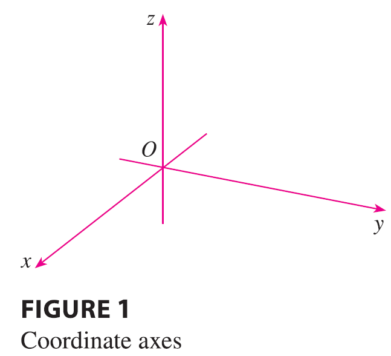
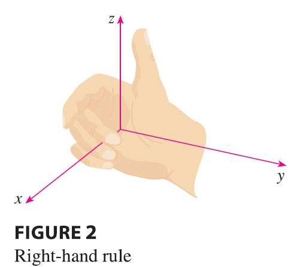
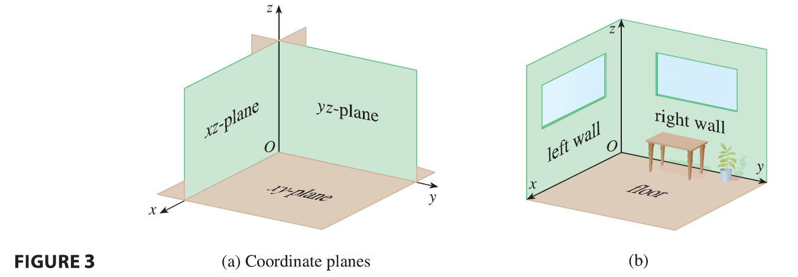
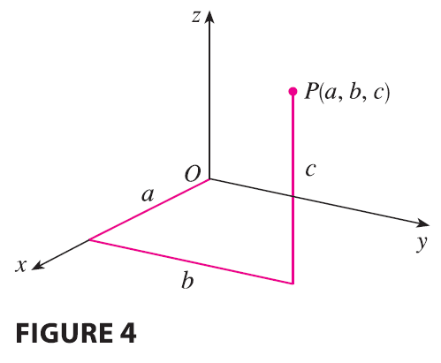
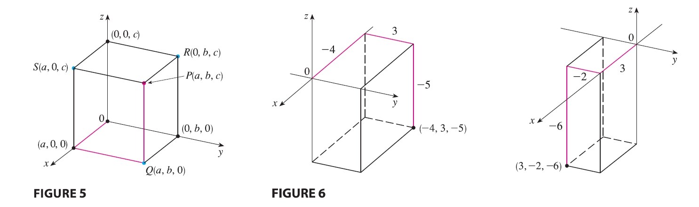

To locate a point in a plane, we need two numbers. We know that any point in the plane can be represented as an ordered pair \((a, b)\) of real numbers, where \(a\) is the x-coordinate and \(b\) is the y-coordinate. For this reason, a plane is called two-dimensional. To locate a point in space, three numbers are required. We represent any point in space by an ordered triple \((a, b, c)\) of real numbers.
In order to represent points in space, we first choose a fixed point \(O\) (the origin) and three directed lines through \(O\) that are perpendicular to each other, called the coordinate axes and labeled the x-axis, y-axis, and z-axis. Usually we think of the x- and y-axes as being horizontal and the z-axis as being vertical, and we draw the orientation of the axes as in Figure 1.

The direction of the z-axis is determined by the right-hand rule as illustrated in Figure 2: If you curl the fingers of your right hand around the z-axis in the direction of a 90° counterclockwise rotation from the positive x-axis to the positive y-axis, then your thumb points in the positive direction of the z-axis.

The three coordinate axes determine the three coordinate planes illustrated in Figure 3(a). The xy-plane is the plane that contains the x- and y-axes; the yz-plane contains the y- and z-axes; the xz-plane contains the x- and z-axes. These three coordinate planes divide space into eight parts, called octants. The first octant, in the foreground, is determined by the positive axes.

Because many people have some difficulty visualizing diagrams of three-dimensional figures, you may find it helpful to do the following [see Figure 3(b)]. Look at any bottom corner of a room and call the corner the origin. The wall on your left is in the xz-plane, the wall on your right is in the yz-plane, and the floor is in the xy-plane. The x-axis runs along the intersection of the floor and the left wall. The y-axis runs along the intersection of the floor and the right wall. The z-axis runs up from the floor toward the ceiling along the intersection of the two walls. You are situated in the first octant, and you can now imagine seven other rooms situated in the other seven octants (three on the same floor and four on the floor below), all connected by the common corner point \(O\).
Now if \(P\) is any point in space, let \(a\) be the (directed) distance from the yz-plane to \(P\), let \(b\) be the distance from the xz-plane to \(P\), and let \(c\) be the distance from the xy-plane to \(P\). We represent the point \(P\) by the ordered triple \((a, b, c)\) of real numbers and we call \(a, b,\) and \(c\) the coordinates of \(P\); \(a\) is the x-coordinate, \(b\) is the y-coordinate, and \(c\) is the z-coordinate. Thus, to locate the point \((a, b, c)\), we can start at the origin \(O\) and move \(a\) units along the x-axis, then \(b\) units parallel to the y-axis, and then \(c\) units parallel to the z-axis as in Figure 4.

The point \(P(a, b, c)\) determines a rectangular box as in Figure 5. If we drop a perpendicular from \(P\) to the xy-plane, we get a point \(Q\) with coordinates \((a, b, 0)\) called the projection of \(P\) onto the xy-plane. Similarly, \(R(0, b, c)\) and \(S(a, 0, c)\) are the projections of \(P\) onto the yz-plane and xz-plane, respectively.
As numerical illustrations, the points \((-4, 3, -5)\) and \((3, -2, -6)\) are plotted in Figure 6.

The Cartesian product \(\mathbb{R} \times \mathbb{R} \times \mathbb{R} = \{(x, y, z) | x, y, z \in \mathbb{R}\}\) is the set of all ordered triples of real numbers and is denoted by \(\mathbb{R}^3\). We have given a one-to-one correspondence between points \(P\) in space and ordered triples \((a, b, c)\) in \(\mathbb{R}^3\). It is called a three-dimensional rectangular coordinate system. Notice that, in terms of coordinates, the first octant can be described as the set of points whose coordinates are all positive.